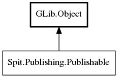

Publishable
Object Hierarchy:

Description:
public interface Publishable :
Object
Describes an underlying media item (such as a photo or a video) that your plugin uploads to a remote publishing service.
Namespace: Spit.Publishing
Package: shotwell-plugin-dev
Content:
Methods:
-
public abstract
File? get_serialized_file ()
Returns a handle to the file on disk to which this publishable's data has been serialized.
-
public abstract
string get_publishing_name ()
Returns a name that can be used to identify this publishable to the remote service.
-
public abstract
string? get_publishing_description ()
Returns descriptive text that describes this publishable to the remote service, or null if this
publishable has no description.
-
public abstract
string[] get_publishing_keywords ()
Returns an array of strings that should be used to tag or mark this publishable on the remote service,
or null if this publishable has no tags or markings.
-
public abstract MediaType get_media_type ()
Returns the kind of media item this publishable encapsulates.
-
public abstract
DateTime get_exposure_date_time ()
Returns the creation timestamp on the file.